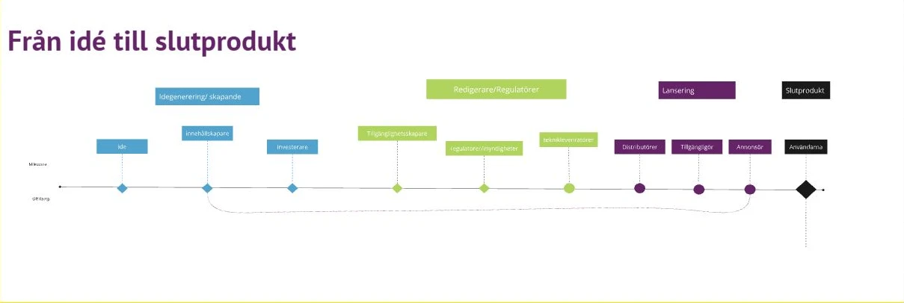
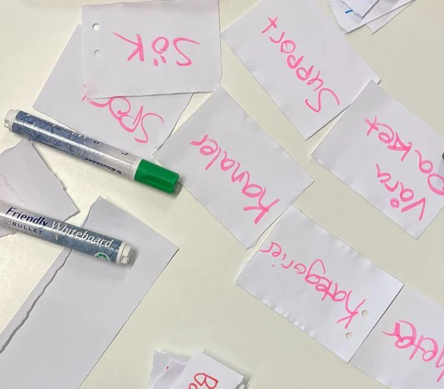
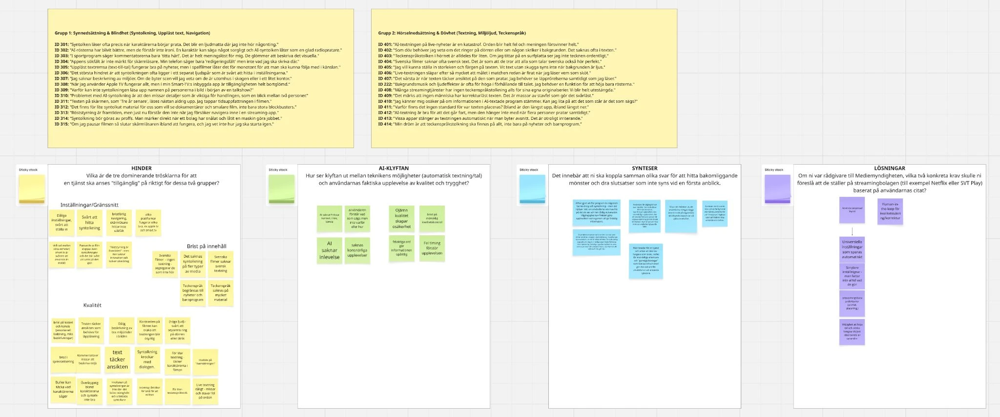

Case study · Kvantitativa metoder · Grupprojekt
Hela upplevelsen
Vad krävs för att en streamingtjänst ska vara tillgänglig på riktigt? Vi tittade på TV4 Play med fokus på personer med syn- och hörselnedsättning.
01 · ProblembildKrav mot teknisk kapacitet
I kursen Kvantitativa metoder på Nackademin valde vi själva att titta på TV4 Play. För att förstå problemet läste vi rapporten med beslutsmodell för krav på tillgänglighet i tv-sändningar och beställ-tv från 2021, utforskade TV4 Plays tillgänglighet och träffade en representant från SRF.
Vi kartlade också hela vägen från idé till slutprodukt, för att se var i kedjan tillgängligheten hamnar. Där hittade vi ett teknikgap i direktsänd textning: kraven är högre än vad tekniken klarar idag.

02 · ArbetsprocessTre steg
-
01
Empati
- Analys av beslutsmodellen (2021)
- Utforskning av TV4 Plays tillgänglighet
-
02
Samla insikter
- Kartläggning av produktionskedjan
- Utformning av enkät
- Omvärldsanalys
-
03
Strukturera
- Workshop
- Card sorting
- Sortering av data
- AI som Red team
03 · Första hypotesenEtt tekniskt problem?
Vi gick tillbaka till kartan över alla inblandade och valde med dot voting vilken hypotes vi skulle gå vidare med.
”Vi tror att bristen på tillgänglighet i direktsändningar beror på en teknisk eftersläpning i produktionskedjan. Om tal-till-text-verktyg blir bättre automatiserade och håller tillräckligt hög kvalitet, så kommer de att möta myndighetens precisionskrav på 60 %, utan dyr mänsklig kontroll.”
Vår valda hypotes
04 · EnkätTio frågor till de som textar
Vi utformade en enkät till personer som jobbar med textning vid direktsändning. Den skickades aldrig ut, men vi fick feedback på den i en gruppövning.
- 10enkätfrågor
- 3kärnfrågor: hur många som arbetar med textning, när i processen tillgänglighet beaktas och vilket arbetssätt som används
- 1målgrupp: de som textar direktsändningar
Språk
Felstavningar och en blandning av svenska och engelska.
Formulering
Ledande frågor och otydliga eller överlappande svarsalternativ. Vissa frågor behövde preciseras, till exempel ”texten inte rätt i sändning”.
Insikt
Tydliga och neutrala frågor är det som ger tillförlitliga svar.
05 · WorkshopTV4 Play genom någon annans ögon
Med Cards of Humanity och Funkify kombinerade vi en funktionsnedsättning med ett karaktärsdrag och testade TV4 Plays tillgänglighet utifrån den personen.
Ibland blev kombinationerna orealistiska, som en 25-årig kvinna med demens, och personorna var inte alltid rättvist framställda, som ”Hyperactive Henny”.
Insikt
Tillgänglighet är inte bara teknik.
Insikt
Det är viktigt med ett verkligt användarperspektiv.
06 · Open card sortingInnehållet finns, men går inte att hitta
Scenariot kom från läraren: syntolkat och teckentolkat material finns, men strukturen gör det svårt att hitta. Problemet handlar alltså om struktur, inte om produktion.
Med fokus på synnedsättning plockade vi isär TV4 Play: kategorier, etiketter, menyer, innehållstyper och sökord blev egna kort. Tomma kort gav plats för användarens egna ord, så att vi kunde se användarens mentala modell i stället för systemets logik.
”Användaren vill ha en tydlig väg till syntolkat material.”
Insikt

07 · Sortering av dataFrån 30 citat till mönster
Datan var övningsmaterial: ett fiktivt utdrag ur en undersökning om hur personer med syn- och hörselnedsättning upplever streamingtjänster, som läraren tagit fram. Det var alltså inte riktiga användare.
Först städade, sorterade och filtrerade vi datan i Excel, till exempel funktionsnedsättning kopplat till tjänst. Sedan tog vi 30 citat och sorterade och kategoriserade dem för att hitta de största hindren och klyftan mellan vad AI kan och hur användarna upplever det.
- ”Dålig beskrivning av till exempel miljö och tider i bilden.”
- ”AI saknar eller missar kontext, ironi och känsla.”
De tre största hindren

08 · SyntesAnvändare får tillgång till vad som händer, men exkluderas från hur det känns.
Det finns en ojämlikhet i den konstnärliga upplevelsen. Om en seende eller hörande person får uppleva spänning genom musik och blickar, får en person med funktionsnedsättning bara uppleva fakta.
Får inte hela upplevelsen
leder tillKänsla av exkludering
09 · Andra hypotesenAI som Red team
Med syntesen i bagaget formulerade vi en ny hypotes, som vi sedan lät AI granska som ett Red team.
”Om vi ökar träffsäkerheten med AI-drivna tillgänglighetsfunktioner med 50 %, så kommer nöjdheten hos användare med syn- eller hörselnedsättningar öka med minst 10 %.”
Andra hypotesen
- 1. Kritik
- 2. Insikter
- 3. Stöd
- 4. Feedback
10 · Vad vi lärde ossKill your darlings.
En bred uppgift gav oss frihet att hitta en egen metod och att testa oss fram.
Utmaningar
- En bred uppgift
- Ett annat perspektiv
- Ingen erfarenhet av medieproduktion
- Svårt att veta syftet och ställa rätt frågor
Lärdomar
- Bred uppgift, egen metod
- Frihet att testa
- Kill your darlings
Min del
Alla i gruppen skrev sina delar. Jag formgav presentationen så att den blev tydlig och intressant att lyssna på.